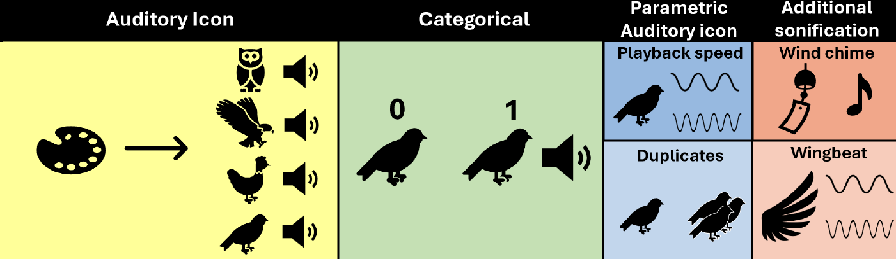

Birdsongification: Contextual and Complementary Sonification for Biology Visualization

Venue. ICAD (2024)
Abstract. Choosing whether to represent data in an abstract or concrete manner through sonification is generally dependent on the applicability of the dataset and personal preference of the designer. For supporting a visualization with a high level of abstraction, a sonification can purposefully act as a complement by giving concrete contextual cues to the data representation with the use of auditory icons. This paper presents a case study of using bird songs as auditory icons to give context to a biology visualization, and explores how additional information of the bird species can be conveyed together with the auditory icons with parameter mapping sonification. The auditory icons are used as a foundation to convey additional information of the dataset, either by creating a parametric auditory icon, or by adding an additional sonification that accompanies the auditory icon. A user evaluation was conducted to validate and compare the different sonification mappings. The results show that there is a subjective difference of how participants perceived the sonifications, where the participants preferred sonifications that had a concrete mapping design. The sonification approaches that are explored in this study have the potential to be applied to more general sonification designs.